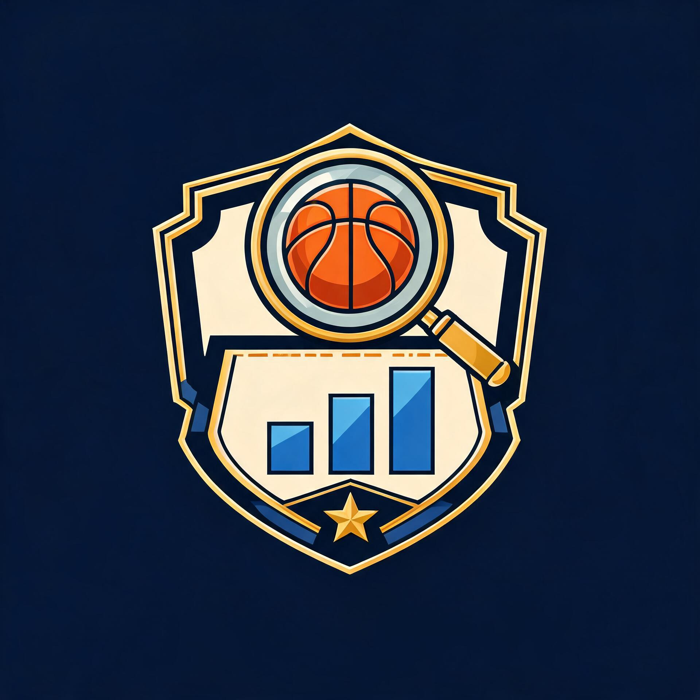

Player Blueprint
Compare production and inspect shot tendencies and context splits.

Scout StudioDJ's House of Cards & Comics · NBA evidence workspaceExplore recorded player, season, and shared-floor evidence from the published Scout package. These views describe the sample; they do not predict a future game.
NBA evidence appears only after the validated 2020–26 projection loads.
Pooled team totals, observed season rows, and career gaps stay labeled at the level of detail the package provides.
Player Blueprint, Chemistry Lab, Composite Forge, Game Lab, Season Lab, and Career Lab use the published 2020–26 Scout projection. Evidence remains labeled at its observed grain.
Compare production and inspect shot tendencies and context splits.
Pin a shared-floor group or donor recipe, then inspect what changed.
Explore a matchup, custom league, or observed season history with repeatable assumptions.
Choose a donor for each block from the loaded team. Related metrics travel together. The pooled recipe remains separate from the observed season-keyed donor view below.
Inspect components from one recorded season, phase, and team row. This tests a recipe at the same level of detail the package provides; it never predicts how a new player would perform.
Load a team first, then read the bounded season table.
Choose 2–5 players from this team sample.
Five-player samples are exact possession-start lineups. Smaller groups share the floor with additional teammates. An unseen combination stays unknown.
The workbench is designed to make an argument from observed evidence without turning a sample, rate, or range into a prediction.
Structured event statistics and reconstructed shared-floor possessions. Check attempts, minutes, and coverage before drawing a conclusion.
Gravity, decision speed, screen navigation, and defender assignments cannot be read directly from steals, blocks, or shot percentages.
These views do not predict wins, health, a player’s career, or an untested lineup. Adjusted model coefficients stay private.